| 日付 | 2014年8月31日（日） |
|---|---|
| メンバー | 家族（妻、長女・3歳、長男・1歳） |
| アクセス | 車 |
江の島は言わずと知れた、神奈川を代表する景勝地である。
サザンオールスターズの歌詞によく出てくる地名であり
名前だけは昔からよく知っていた。
関東に来た直後に一度だけ訪れた記憶があるが、
今回、久しぶりに再訪する。
9時過ぎに江の島に到着。駐車場に車を停め、仲見世通りを歩いていく。
まだ時間は早いが、それなりに観光客の数は多い。
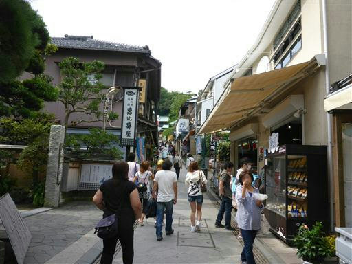
階段を上っていくと、大きな赤い鳥居と随神門が現れる。
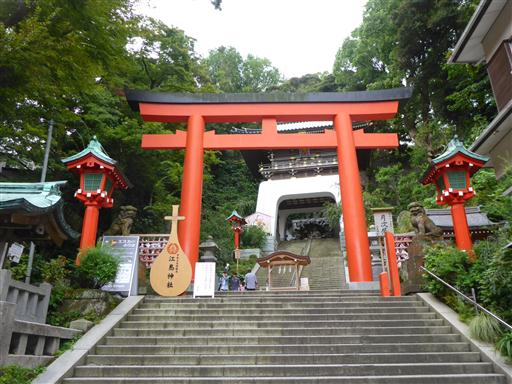
江の島は野良猫が多いことで有名。
人を恐れない野良猫が、屋根の上で昼寝をしている。
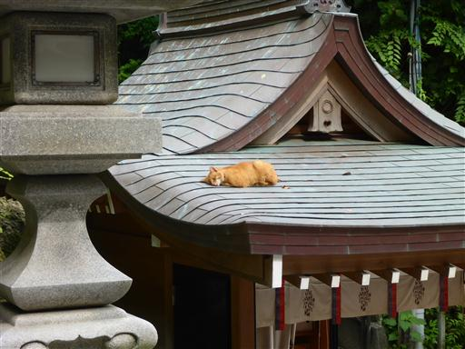
江の島は山がちな地形だ。神社まで長い階段が続く。
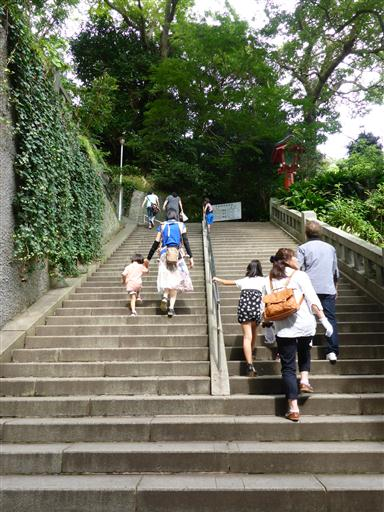
手水舎。ここで身を清める。
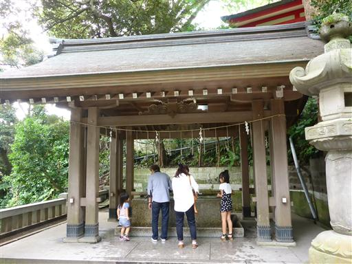
辺津宮に到着。大きな輪を潜る。

源頼朝が創建、1675年に再建された建物らしい。
思ったよりも歴史のある建物だ。

むすびの樹。絵馬に恋愛に関する願い事などが書かれている。
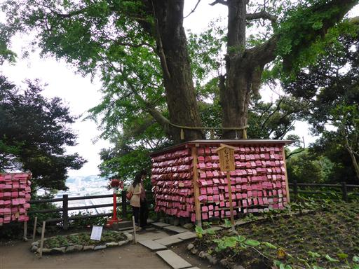
むすびの樹の側に小さな展望台がある。
見えているのは本土と江の島を結ぶ橋だ。
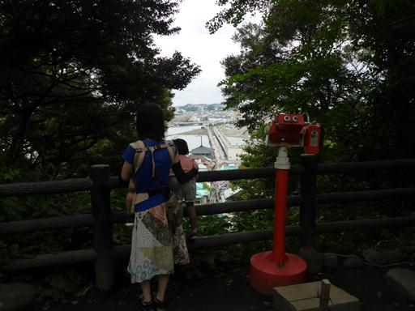
江の島の風景。港にたくさんのヨットが並んでいる。
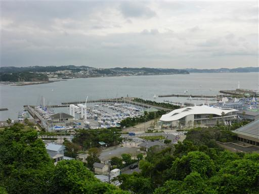
眼下は緑一色。全てのものが、この緑の植物によって覆われている。
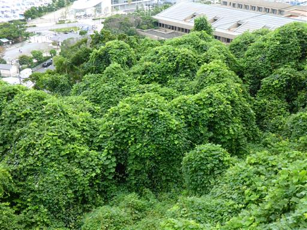
中津宮に到着。こちらは朱色の美しい建物だ。
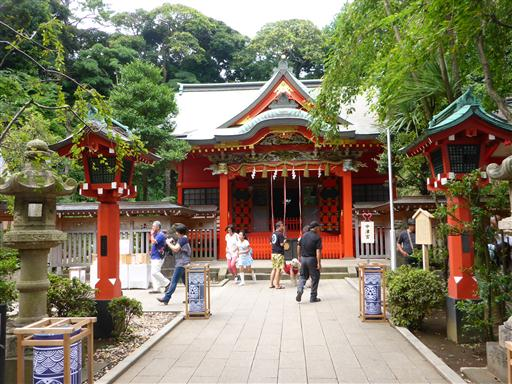
展望台に上って海を眺める。多くの船が往来している。
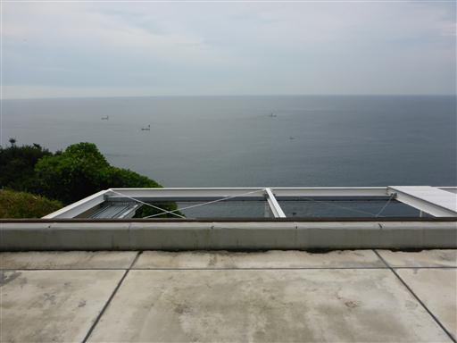
島の中央に江の島灯台がそびえ建っている。高さ60mで上部は展望台だ。
今回はあまり時間がないためパスする。
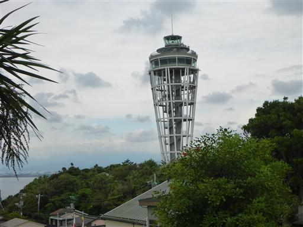
山二つと呼ばれる場所に到着。江の島を二分する場所で、山と山の境目にあたる。
両側の崖は見事に切れ落ちていて、なかなか迫力のある風景だ。
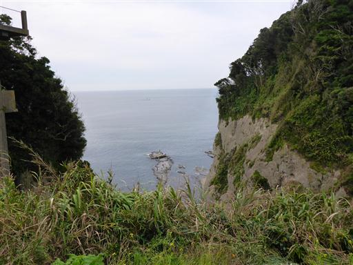
山二つを越えて、西側の山を歩いていく。
こちらは亀石。亀の甲羅の模様がある。
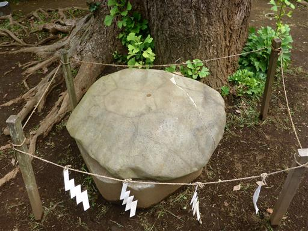
江島神社の奥津宮。ここが一番奥にある建物だ。
険しい道の中、どうやってこれらの建物の資材を運んだのだろう？
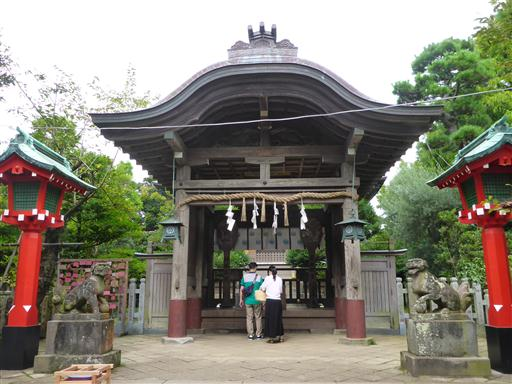
風情のある茶屋。子供がいなければ、こういう所でゆっくりするのも良いかもしれない。
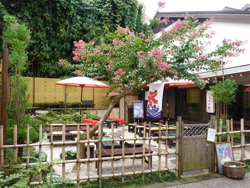
江の島の先端に到着。海を見下ろしながら階段を下って行く。
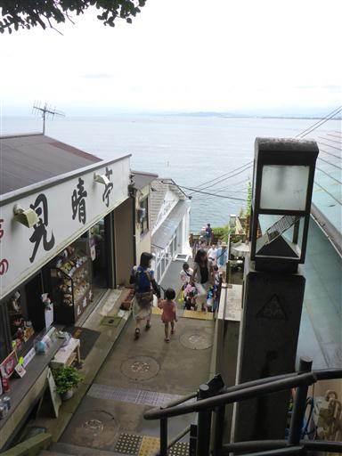
磯に下りる前に、まず江の島岩屋と呼ばれる洞窟に行ってみることにする。
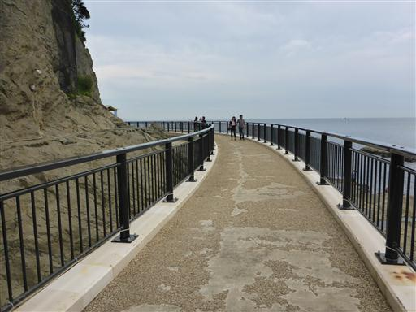
入場料を払って、第一岩屋に入洞する。
海の波によって浸食されてできた洞窟で、その後、隆起して地上に姿を現した。
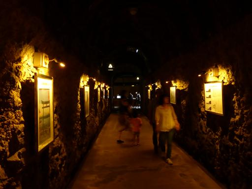
昔は立入禁止だったが、1993年に整備されて公開された。
洞窟内部は非常に良く整備されている。
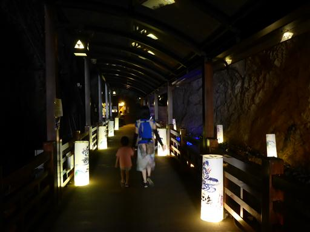
通路の脇に石造物が陳列されている。
これらは古来から洞内にあったもので、学術的に貴重なものらしい。
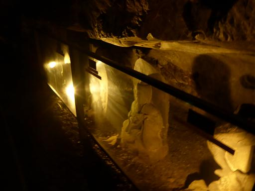
途中で手燭を渡される。火を照らして洞内を進んでいくのは、なかなか雰囲気が出て面白い。
手燭が無くても、歩くには支障がない程度の照明があるのが少々残念なところだ。
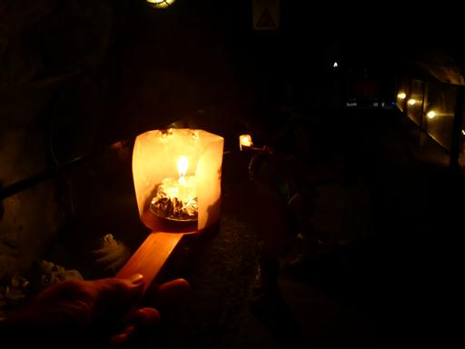
洞窟の最深部が江島神社発祥の場所とされるところだ。
創建は552年と非常に歴史があるが、にわかには信じがたい。
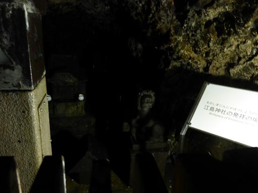
第一岩屋を抜けて、第二岩屋に向かう。
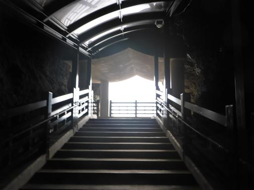
洞窟の出口からは荒々しい岩壁と、その先に広がる海を望むことができる。
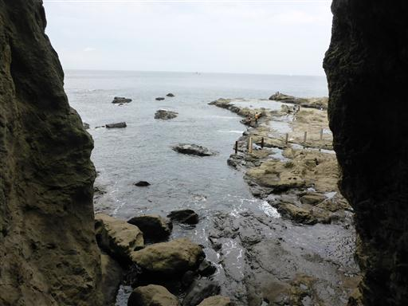
第一岩屋と第二岩屋を結ぶ通路。ここも背後の岩壁は迫力がある。
長い年月をかけて浸食されたのだろう。
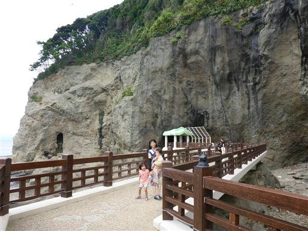
崖の中の急斜面にハマカンゾウの花が咲いている。
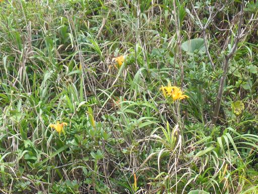
第二岩屋に入洞。こちらは第一岩屋よりも規模が小さい。
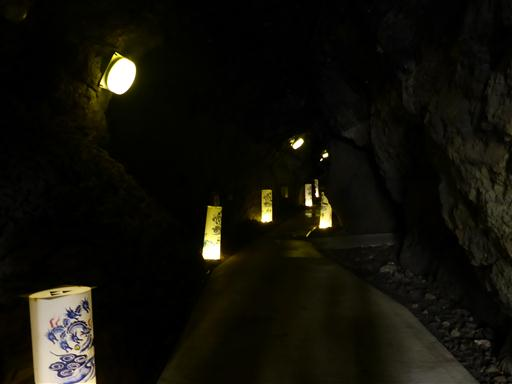
最深部に竜の像が祀られている。
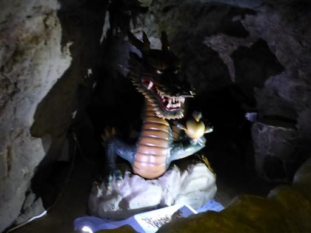
側には太鼓があり、2回叩いて2回竜神様が光ると願い事が叶うとか。
叩き過ぎるのは良くないらしい…
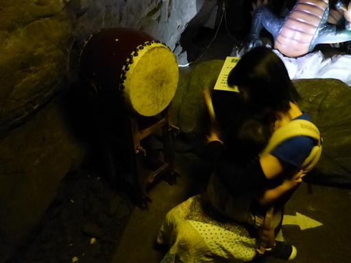
洞窟見学を終えたら、磯に下りて岩場に腰を下ろし、おやつタイムにする。
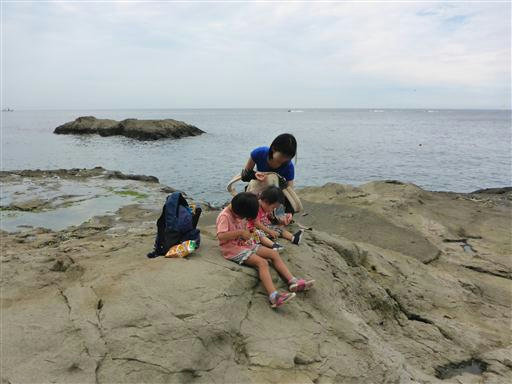
おやつを食べたら磯遊び。所々にある水たまりではカニなどを見つけられる。
残念ながら、水のきれいさは以前訪れた城ヶ島に劣る。
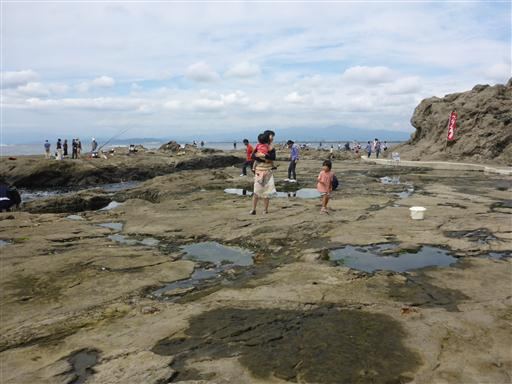
深い入り江になっているところは小魚がたくさん泳いでいる。
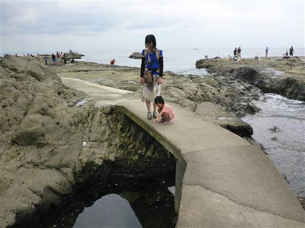
時々高い波がやってきて、入り江に大量の水が入ってくる。
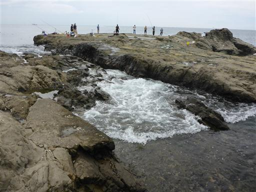
大きな水たまり。一面藻のような植物で覆われている。
水が汚くて底は見えないが、かなり深そうだ。
怖がりの娘は手をつないで歩いていたが、手を放して走り始めた途端、
小さな水たまりに足をとられて転倒。両足がずぶぬれになりグズグズになってしまった…
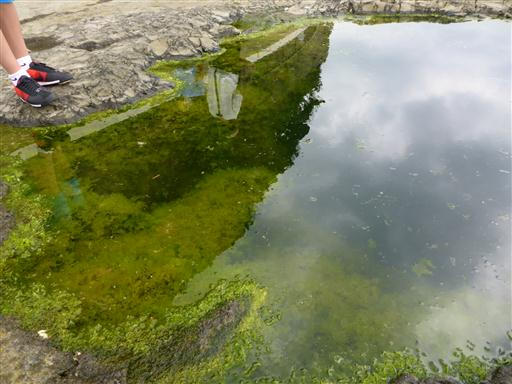
お昼になったので、江之島亭で昼食をとる。
江の島はしらす料理が名物だ。
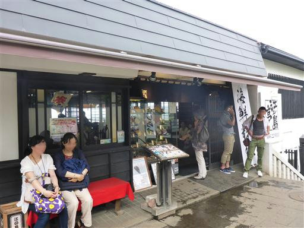
窓からは海が眺められ、良いロケーションだ。
しらすは名物だけあってなかなかおいしかった。
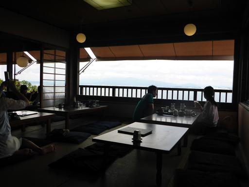
昼食をとったら、混雑する前に帰ることにする。
道中、亀がたくさんいたので寄り道して見学。娘がなかなか亀の側を離れなかった。
帰りは仲見世通りが大混雑、駐車場前も道路も大混雑していて、長蛇の列ができていた。
渋滞を尻目に帰宅する。早めの行動で混雑を避けられたため、思ったよりもゆっくりと楽しめた。